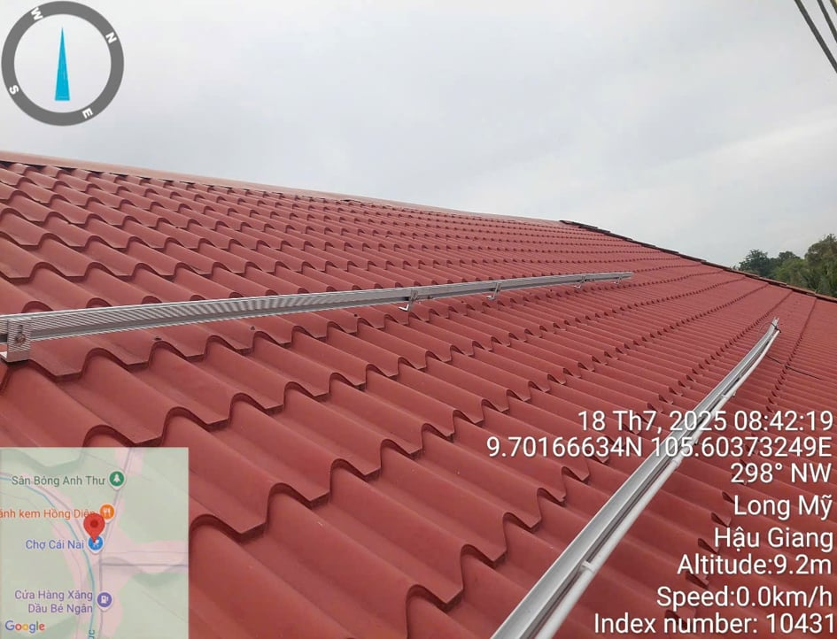
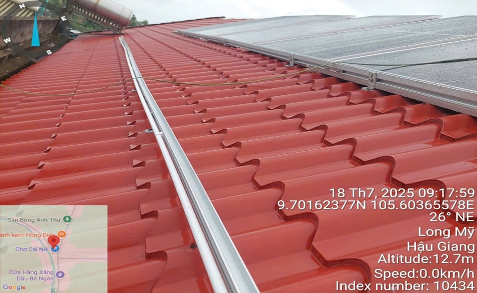
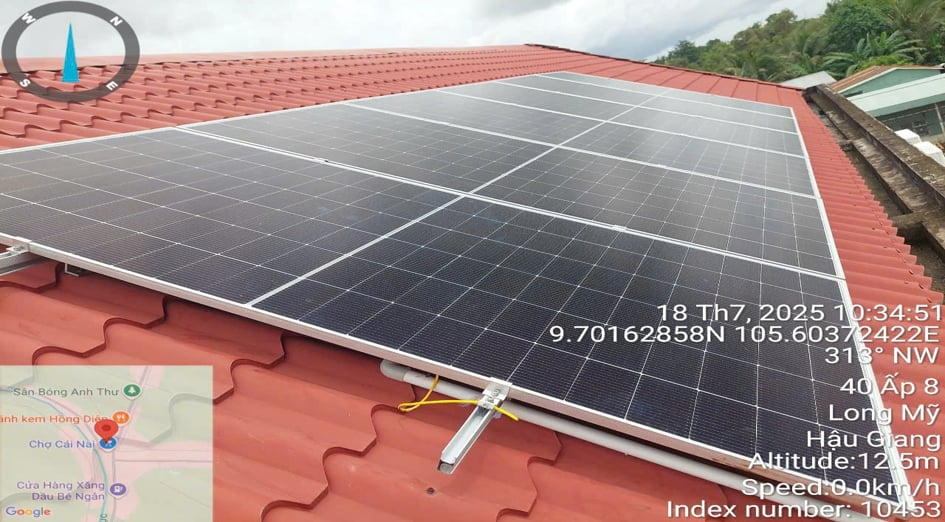
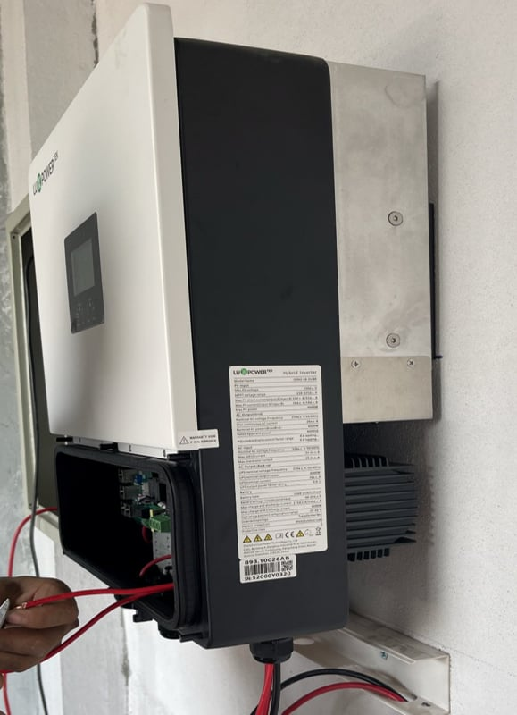
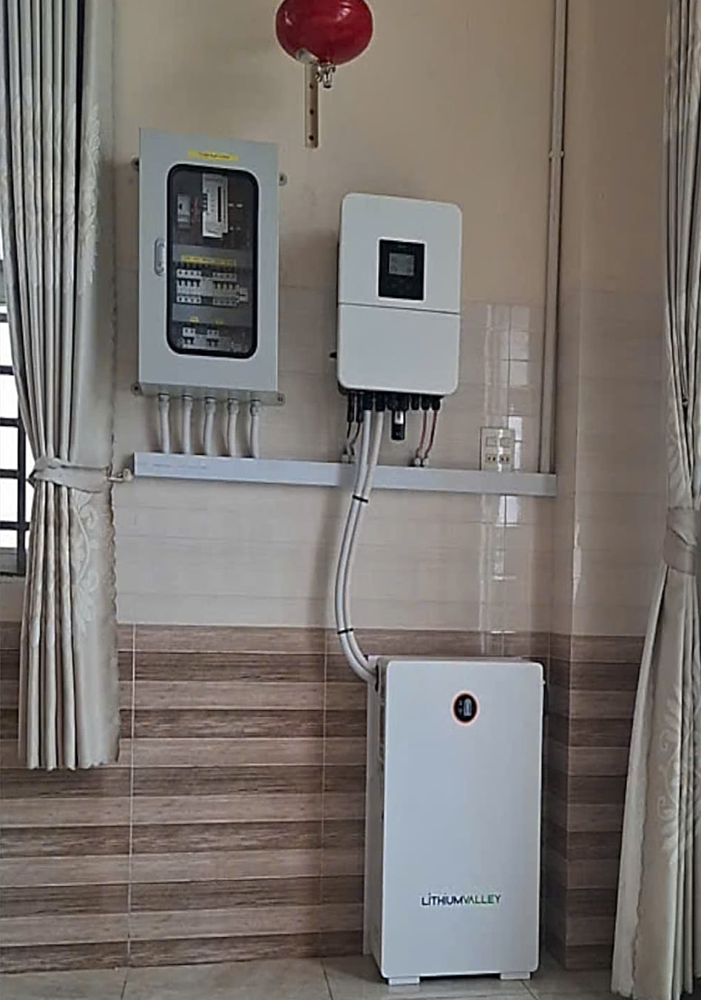

Mô phỏng hệ thống điều hướng tấm pin mặt trời (PVsyst)
Đề tài thực tập tốt nghiệp (báo cáo 8.9/10): dùng PVsyst so sánh hệ cố định, điều hướng 1 trục (có back-tracking) và 2 trục cho hệ 7,38 kWp (12 tấm 615 Wp) kèm pin lưu trữ 14,3 kWh, lấy số liệu từ một công trình thực tế tại Hậu Giang.
Kết quả mô phỏng: 4.326 / 6.997 / 7.721 kWh/năm (cố định / 1 trục / 2 trục). Hệ 1 trục có tỷ số hiệu suất (PR) cao nhất nên được đề xuất cho hộ gia đình, vì cân bằng giữa sản lượng, chi phí và bảo trì.
Fixed4.326
1-axis6.997
2-axis7.721
kWh/year · PVsyst





Hình ảnh công trình áp mái hộ gia đình mà mình tham gia khi thực tập tại Công ty Minh Sơn.